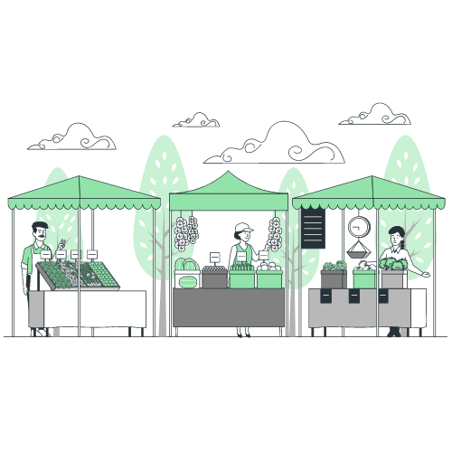

Em uma pequena vila abraçada pelo cerrado, onde o solo avermelhado guarda segredos ancestrais e as árvores de troncos tortos resistem ao tempo e ao fogo, eu, Maria tive uma visão grandiosa: levar produtos orgânicos, cultivados com amor e respeito à natureza. Junto com a minha família, transformei um pedaço de terra herdado dos meus pais em um verdadeiro celeiro agrícola sustentável.
Todas as manhãs, antes do sol nascer, eu e meus seis filhos saímos para cuidar da nossa horta, onde cultivamos uma variedade de vegetais, frutas e ervas. Utilizamos métodos tradicionais, como a compostagem e o uso de defensivos naturais, para garantir a qualidade dos produtos e preservar o solo para as futuras gerações.
A fama da nossa propiedade rural logo se espalhou, e os moradores da cidade começaram a mostrar interesse em nossos produtos frescos e saborosos. Decidi que era hora de levar nossa colheita até a cidade. Com um pequeno caminhão, minha família e eu fazíamos viagens semanais até a feira local, onde nossas bancas eram sempre as mais movimentadas. Os consumidores apreciavam não apenas a qualidade dos nossos produtos, mas também a história de dedicação e amor ao cultivo que eu contava com brilho nos olhos.
Com o tempo, organizei um sistema de assinaturas para a entrega de cestas semanais de produtos orgânicos conquistando uma clientela fiel na cidade. Minha iniciativa não apenas garantiu o sustento da minha família, mas também inspirou outros agricultores da região a seguirem o mesmo caminho sustentável e colaborativo.
Minha história é um exemplo de como a paixão e o compromisso com a terra podem trazer mudanças significativas, conectando o campo e a cidade de maneira harmoniosa e sustentável.